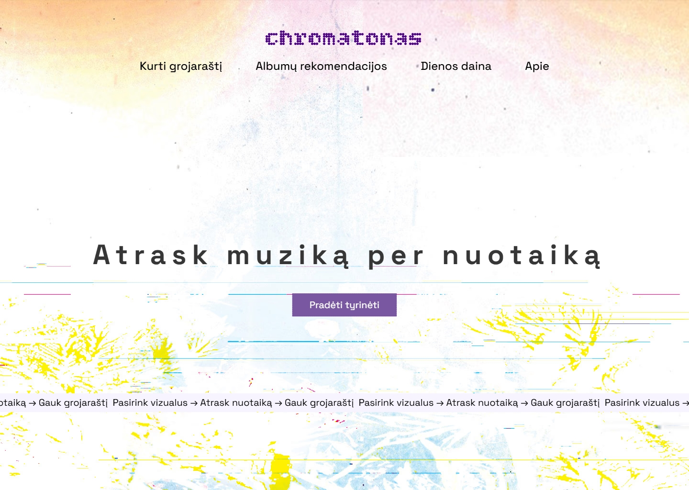
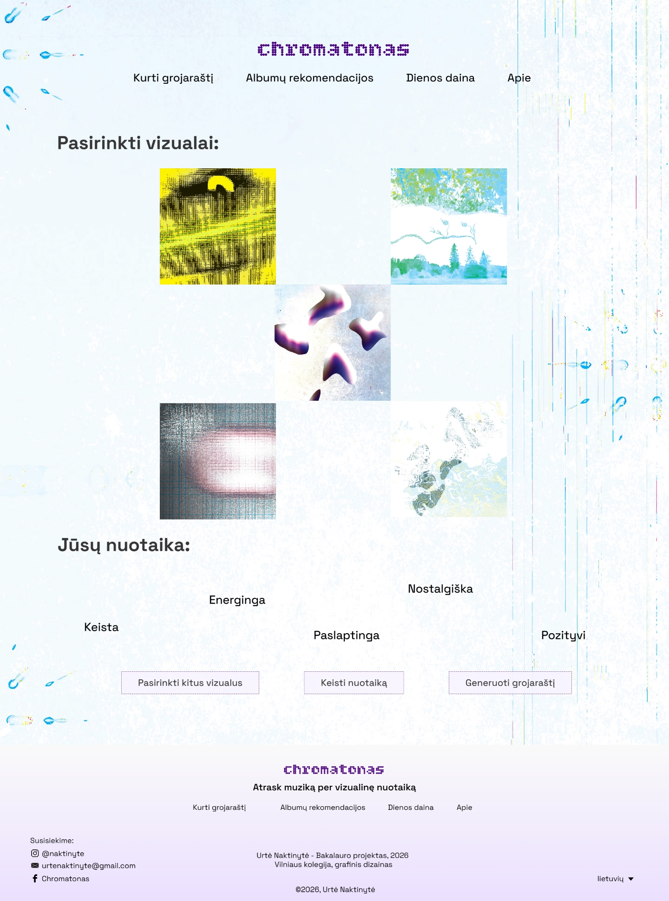
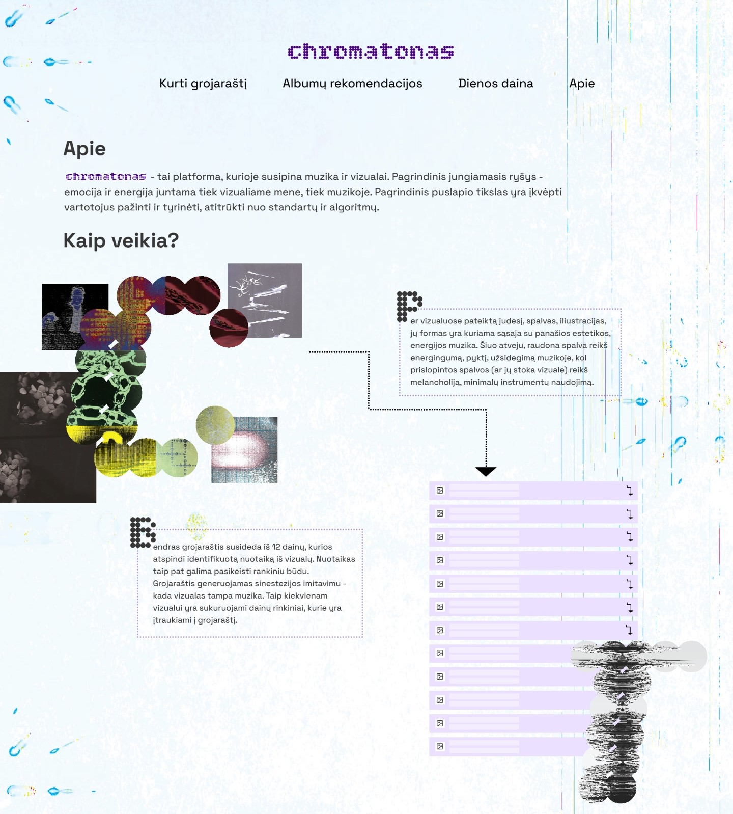
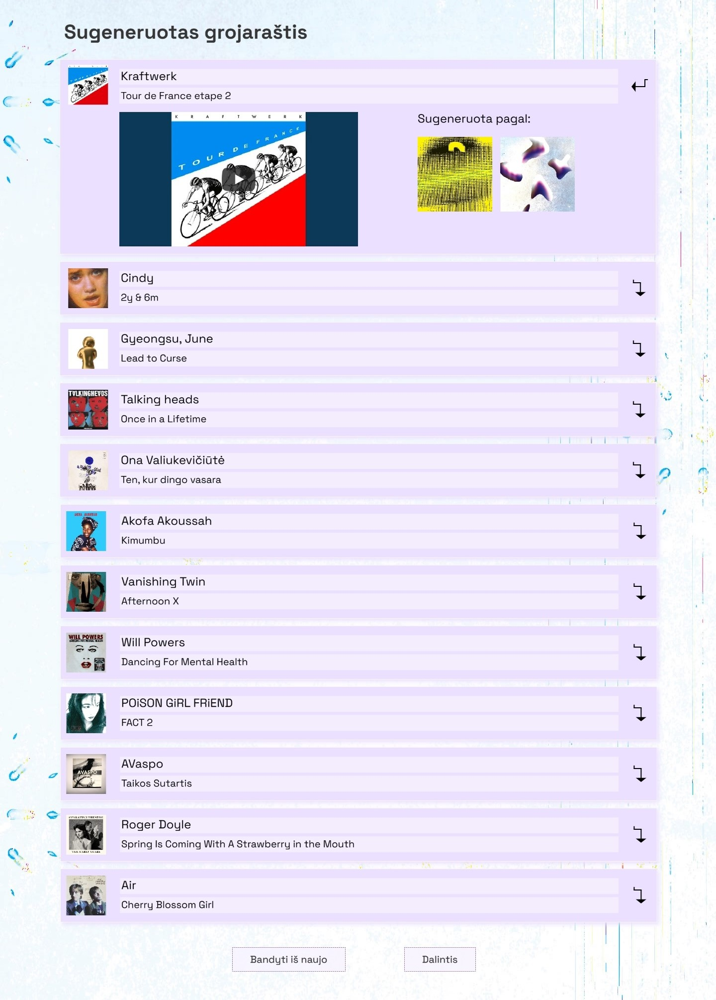
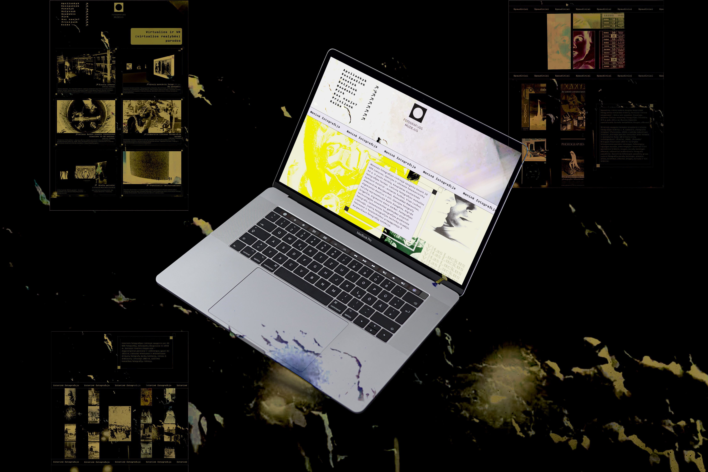
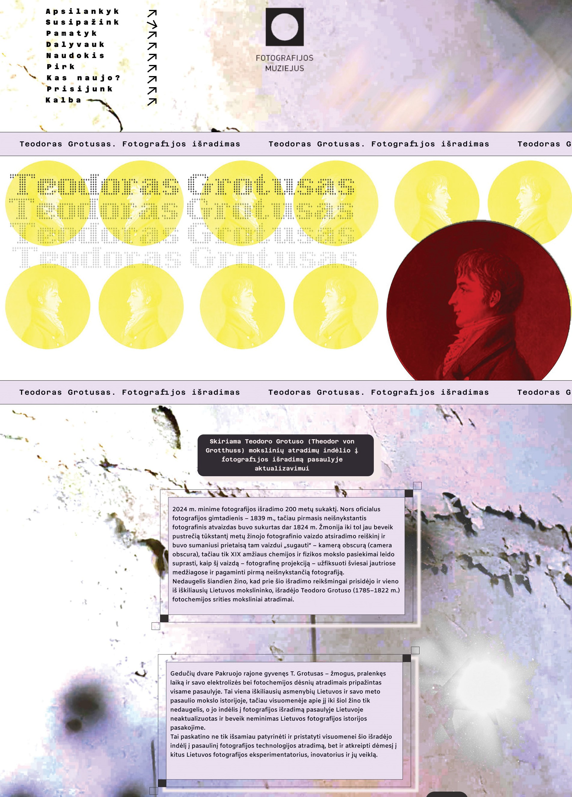

URTĖ NAKTINYTĖ
WEBSITES
Designed
2025-now
BA PROJECT
An interactive music discovery platform designed as my bachelor's project, exploring the connection between visual perception and sound, synesthesia. Through a visual selection process, users receive personalized music recommendations based on mood and aesthetic associations.

Through the movement, colors, illustrations, and shapes presented in the visuals, a connection is created with music of similar aesthetics and energy.



The playlist consists of 12 songs that reflect the identified mood from the visuals. Mood keywords can be changed manually. The playlist is generated by simulating synesthesia - when the visual becomes music. In this way, song collections are created for each visual, which are included in the playlist.


PHOTOGRAPHY MUSEUM WEBSITE REDESIGN
COLLEGE ASSIGNMENT

A UI/UX redesign exploring how a photography museum's digital presence could become more intuitive and visually engaging. The project emphasized exhibition discovery, and a contemporary editorial aesthetic.



.jpg)